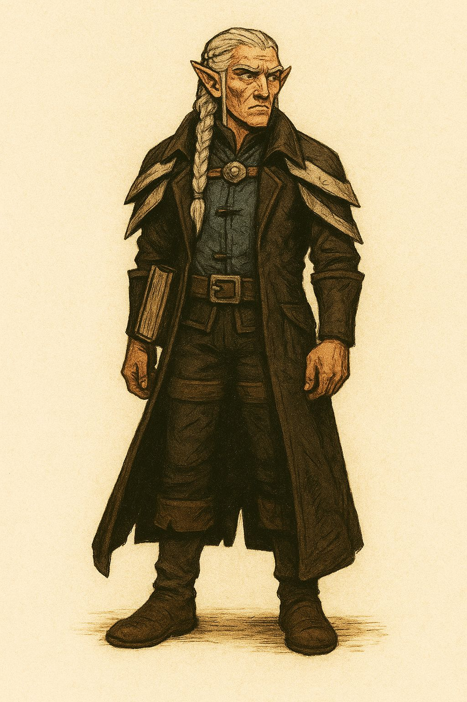

Adler
Veterano de la comarca, líder natural con una mirada que no falla...
Retratos, biografías y el espacio para que los jugadores suban sus notas.
Aquí se muestran los retratos y pequeñas biografías de los jugadores. Haz clic en Seguir leyendo para abrir la ficha completa (modal). Si tienes permisos, puedes subir materiales desde el panel de administración.
Veterano de la comarca, líder natural con una mirada que no falla...
Mago errante, coleccionista de curiosidades y malas decisiones audaces.
Cazador y bromista; sus trucos salvan más que dañan... a veces.